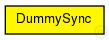
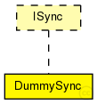

This documentation is released under the Creative Commons license
This documentation is released under the Creative Commons licenseDummy synchronisation module that corrects the clock with a certain imprecission. It uses the simulation time as basis.
See also: IPort
Author: Till Steinbach
The following diagram shows usage relationships between types. Unresolved types are missing from the diagram. Click here to see the full picture.
The following diagram shows inheritance relationships for this type. Unresolved types are missing from the diagram. Click here to see the full picture.
| Name | Type | Default value | Description |
|---|---|---|---|
| action_time | int | 0 |
The time in the cycle (in ticks) when the synchronisation is triggered |
| precission | double | 500ns |
The precission of the synchronisation |
| Name | Value | Description |
|---|---|---|
| display | i=block/timer |
| Name | Direction | Size | Description |
|---|---|---|---|
| TTin | input |
Input for time-triggered traffic |
|
| RCin | input |
Input for rate-constrained traffic |
|
| schedulerIn | input |
Input for scheduler messages |
// // Dummy synchronisation module that corrects the clock with a certain imprecission. // It uses the simulation time as basis. // // @see IPort // // @author Till Steinbach simple DummySync like ISync { parameters: @display("i=block/timer"); // The time in the cycle (in ticks) when the synchronisation is triggered int action_time = default(0); // The precission of the synchronisation double precission @unit(s) = default(500ns); gates: //Input for time-triggered traffic input TTin @directIn @labels(CTFrame); //Input for rate-constrained traffic input RCin @directIn @labels(CTFrame); //Input for scheduler messages input schedulerIn @directIn; }
This documentation is released under the Creative Commons license